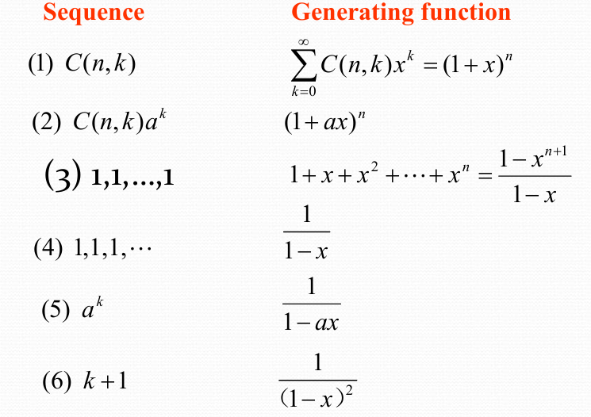
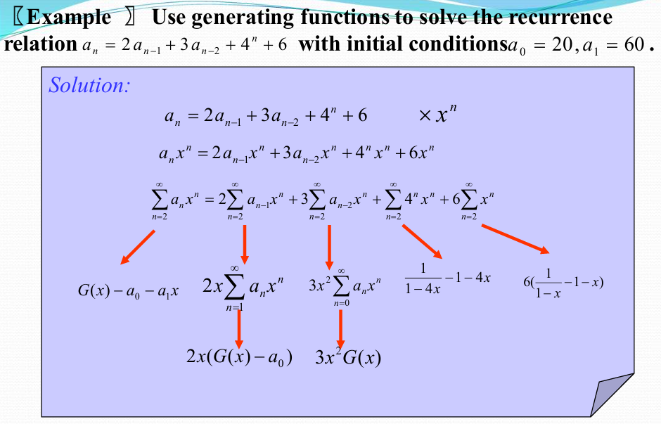
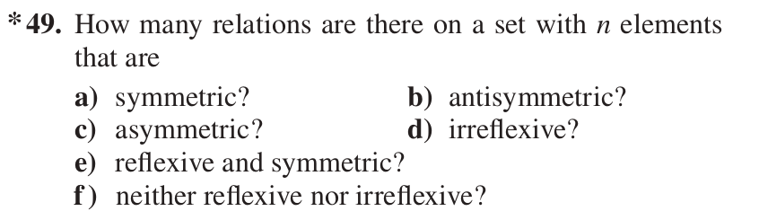
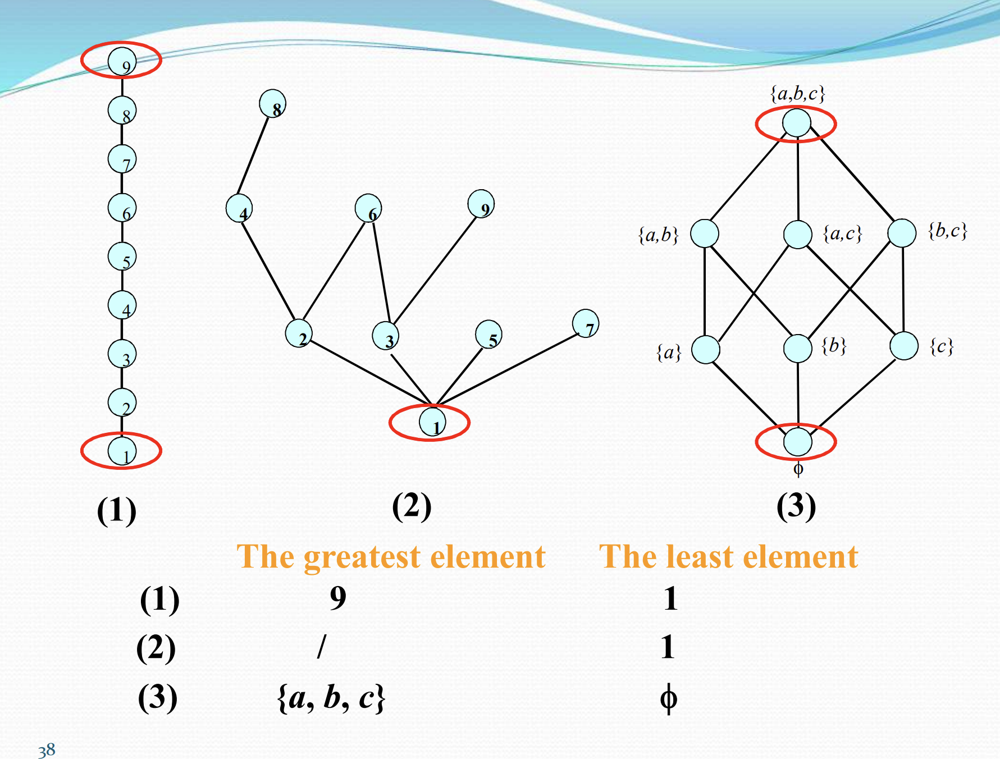
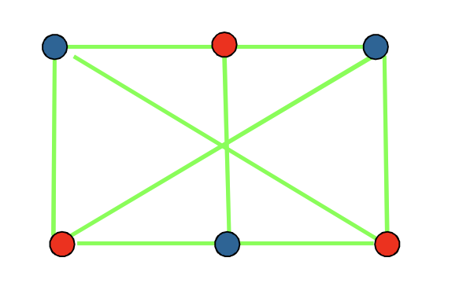
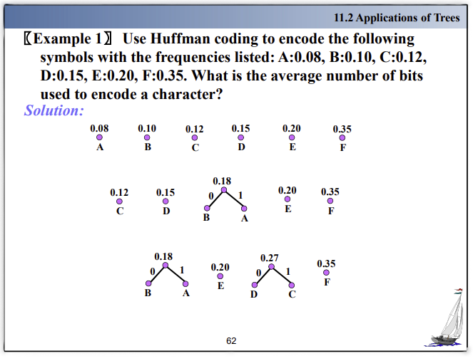
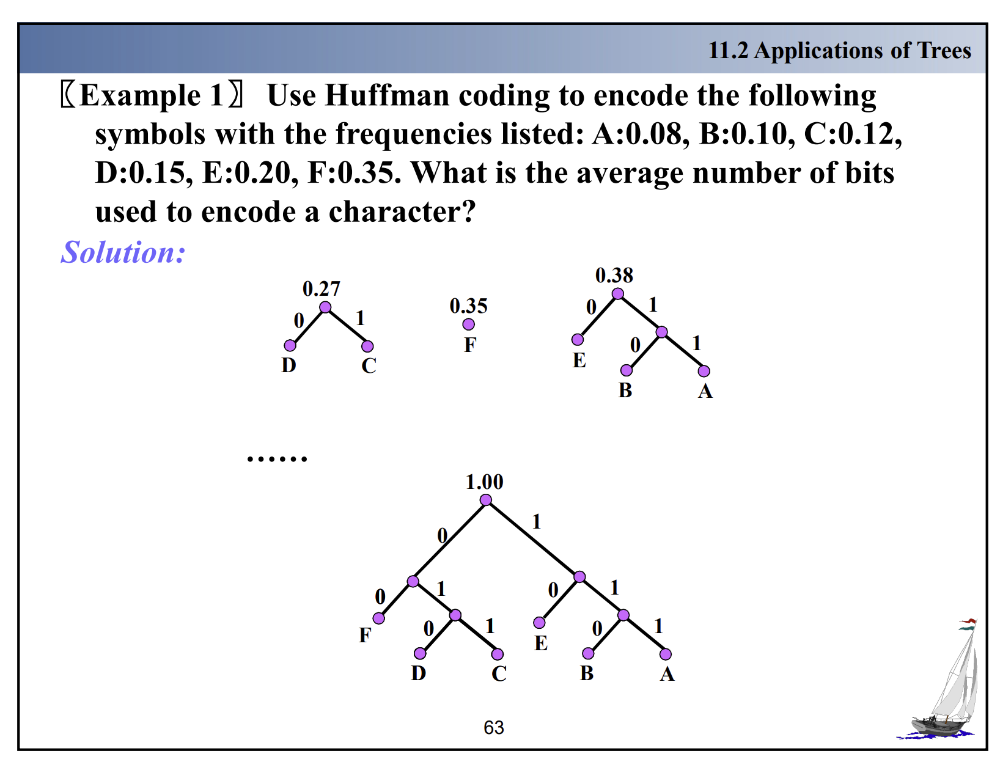

离散数学理论基础¶
约 6649 个字 4 行代码 22 张图片 预计阅读时间 19 分钟
任课教师：郑文庭
Overview
- 数学推理
- 数理逻辑与证明
- 归纳法
- 数论基础
- 组合分析
- 计数方法
- 离散结构
- 基本结构
- 关系
- 图
- 树
- 算法思维
- 算法
- 递归
逻辑¶
逻辑运算符优先级

taulogy: 恒真，如p∨¬p
contradiction: 恒假，如p∧¬p
contingency: “可能发生的”，既非taulogy又非contradiction，如p
dual（对偶）: 将逻辑表达式中的∧和∨互换，T和F互换，¬不变
- s与t等价，当且仅当s的dual与t的dual等价
De Morgan's Law:¶
¬(p∧q)=¬p∨¬q¬(p∨q)=¬p∧¬q
Other laws:¶
- 交换律：
p∧q=q∧p，p∨q=q∨p - 结合律：
p∧(q∧r)=(p∧q)∧r，p∨(q∨r)=(p∨q)∨r - 分配律：
p∧(q∨r)=(p∧q)∨(p∧r)，p∨(q∧r)=(p∨q)∧(p∨r) - 吸收律：
p∧(p∨q)=p，p∨(p∧q)=p
逻辑恒等式：¶
\(p \leftrightarrow q \equiv (p \rightarrow q) \wedge (q \rightarrow p) \equiv (p \wedge q) \vee (\neg p \wedge \neg q)\)

例
对数独方框进行坐标划分
- 共9列9行，每个格子可填1-9的数字
- 以\(p(i,j,n)\)表示第i行第j列的格子中填入数字n
- 假设在第3行第4列的格子中填入数字5，则\(p(3,4,5)\)为真，\(\forall 1 \le j \le 3 以及5\le j\le 9，p(3,j,5)\)为假
- 于是检索每行：\(\bigwedge_{i=1}^9 \bigwedge_{n=1}^9 \bigvee_{j=1}^9 p(i,j,n)\)
- 检索每列：\(\bigwedge_{j=1}^9 \bigwedge_{n=1}^9 \bigvee_{i=1}^9 p(i,j,n)\)
p NOR(\(\downarrow\)) q: 或非，都假时为真，其余情况为假（对 \(\vee\) 取反）
p NAND(\(\mid\)) q: 与非，有假时为假，其余情况为真（对 \(\wedge\) 取反）
即\(p\downarrow q \equiv \neg(p\vee q)\)，\(p\mid q \equiv \neg(p\wedge q)\)
由真值表有\(p \mid p \equiv \neg p\)，\(p \downarrow p \equiv \neg p\)
范式¶
- 析取范式(Disjunctive Form)：将一个命题公式写成若干个(有限项)合取式的析取式，如\((p∧q)∨(¬p∧q)∨(p∧¬q)∨(¬p∧¬q)\)
- 合取范式(Conjunctive Form)：将一个命题公式写成若干个(有限项)析取式的合取式，如\((p∨q)∧(¬p∨q)∧(p∨¬q)∧(¬p∨¬q)\)
-
最小项(minterm):所有逻辑变量在各个表达式中出现且只出现一次，再合取
- Each minterm is true for exactly one assignment.
- 性质:
- \(m_1∨m_2∨···∨m_n = True\)
- \(\forall i,j, m_i \wedge m_j = False\)
- 给定\(x,y,z\)三个变量，\(j\)为\(m_j\)对应的下标（十进制），二进制记为\(b_j\)，则\(b_j\)中的1对应的位置不变，0对应的位置取反，最后合取即可得到\(m_j\)
 （梗来源：系统1）
（梗来源：系统1）
-
最大项(maxterm):所有逻辑变量在各个表达式中都出现且只出现一次，再析取
- Each maxterm is false for exactly one assignment.
- 性质:
- \(M_1∧M_2∧···∧M_n = False\)
- \(\forall i,j, M_i \vee M_j = True\)
- 类似的，这里是1对应的位置取反，0对应的位置不变，最后析取即可得到\(M_j\)
 （梗来源：系统1）
（梗来源：系统1）
Propositional Functions¶
- The statement \(P(x)\) is the value of the Propositional Function \(P\) at \(x\).
- e.g. P(x)表示\(x>0\), 则\(P(1)\)为\(T\)，\(P(-1)\)为\(F\), \(P(10) \rightarrow P(-1)\)为\(T\)
Quantifiers¶
\(\forall x P(x)\): for all x in the domain, P(x) is true.
\(\exists x P(x)\): there exists an x in the domain such that P(x) is true.
- If \(P(x)\) denotes the statement \(x>0\) and the domain \(U\) is all integers, then \(\forall x P(x)\) is false, but \(\exists x P(x)\) is true.
- Given the domain as \(\{x_1, x_2, x_3, \cdots, x_n\}\)
- \(\forall x P(x) = P(x_1) \wedge P(x_2) \wedge P(x_3) \wedge \cdots \wedge P(x_n)\)
- \(\exists x P(x) = P(x_1) \vee P(x_2) \vee P(x_3) \vee \cdots \vee P(x_n)\)
两个量词的优先级高过其他逻辑运算符，如\(\forall x P(x) \rightarrow Q(x)\)表示\(\forall x (P(x) \rightarrow Q(x))\)
\(\neg \forall x P(x) \equiv \exists x \neg P(x)\)
\(\neg \exists x P(x) \equiv \forall x \neg P(x)\)
0-1矩阵¶
对0-1矩阵(只含0,1的矩阵)A,B，有如下定义
矩阵并/交：要求大小一样，得到矩阵的每一元素都是A和B中对应位置元素的并/交
矩阵的Boolean product: \(A \odot B = \{c_{ij}\}\)
- 其中要求A的列数等于B的行数（和矩阵乘法一样）
- 假设\(A_{m \times k} = \{a_{ij}\}，B_{k \times n} = \{b_{ij}\}，则C_{m \times n} = \{c_{ij}\}\)
- \(c_{ij} = (a_{i1} \wedge b_{1j}) \vee (a_{i2} \wedge b_{2j}) \vee \cdots \vee (a_{ik} \wedge b_{kj})\)
Boolean power: \(A^{[k]} = A \odot A \odot \cdots \odot A\)
定义：\(A^{[0]} = E\)
集合论¶
\(X\)和\(Y\)的异或\(X \oplus Y\)是这种元素组成的集合：要么属于\(X\), 要么属于\(Y\)，但不同时属于\(X\)和\(Y\)
算法¶
停机程序(Halting Problem)：判断一个程序是否会停机
- 大O: \(f = O(g)\), 则\(f<kg\) (kg为f上限（最差情况）)
- 大\(\Omega\): \(f = \Omega(g)\), 则\(f>kg\) (kg为f下限（最好情况）)
数论¶
同余¶
\(a \equiv b \pmod{m} \Leftrightarrow m|(a-b) \Leftarrow \exists k \in \mathbb{Z}, a-b=mk\)
(不带括号的mod) \(a \mod b =\) a除以b的余数
于是有
- \(a \equiv b \pmod{m} \Leftrightarrow a \mod m = b \mod m\)
- 若\(a \equiv b \pmod{m}\)，则\(a^k \equiv b^k \pmod{m}\)
线性同余方程¶
\(ax \equiv b \pmod{m}\)
定义 inverse of a modulo m: \(\overline{a} a \equiv 1 \pmod{m}\)，则\(\overline{a}\) is the inverse of a modulo m
- 若\(a\)与\(m\)互质且\(m>1\)，则\(a\)模\(m\)的逆元存在
例(Finding inverses)
- Find an inverse of 7 modulo 234
- \(234 = 33 \times 7 + 3\)
- \(7 = 2 \times 3 + 1\)
- \(1 = 7 - 2 \times 3 = 7 - 2 \times (234 - 33 \times 7) = 67 \times 7 - 2 \times 234\)(这一步要把所有出现过的余数用上一行式子带进去，把1表示为7和234的线性组合)
- 则上一步中7的裴蜀系数\(67\)即为7模234的逆元
- 与此同时所有与67模234同余的数都是7的逆元，如\(67+234k\)
求解方程\(ax \equiv b \pmod{m}\)
- 若\(d = gcd(a,m)\)不整除\(b\)，则无解
- First find an inverse of \(a\) modulo \(m\) (using the Euclidean algorithm)
- 等式两边乘上该逆元，得到\(x \equiv \overline{a}b \pmod{m}\)
例(Solving linear congruences)
- 解\(4x \equiv 5 \pmod{9}\)
- Find inverse of 4 modulo 9:
- \(9 = 2 \times 4 + 1\)
- \(1 = 9 - 2 \times 4\)
- 因此逆元为-2
- Solve the equation:
- \(-2 \times 4x \equiv -2 \times 5 \pmod{9}\)
- \(x \equiv -10 \pmod{9}\)
- Find inverse of 4 modulo 9:
-
中国剩余定理(CRT)：若\(m_1, m_2, \cdots, m_k\)两两互质，则同余方程组\(x \equiv a_1 \pmod{m_1}, x \equiv a_2 \pmod{m_2}, \cdots, x \equiv a_k \pmod{m_k}\)有唯一解
例
- Solve the system of congruences:
- \(x \equiv 1 \pmod{5}\)
- \(x \equiv 2 \pmod{6}\)
- \(x \equiv 3 \pmod{7}\)
- 首先有\(x = 5k+1\)
- 则\(5k+1 = 2 \pmod{6}\)
- 两边加4，\(5k+5 = 0 \pmod{6}\)
- 于是\(k = -1 \pmod{6} = 6j-1\)
- 代入\(x = 5(6j-1)+1 = 30j-4 = 3 \pmod{7}\)
- 则\(30j = 0 \pmod{7}\), \(j = 7r\)
- 代入得\(x = 30(7r)-4 = 210r-4\)
- 即\(x \equiv -4 \pmod{210}\)
- Solve the system of congruences:
-
费马小定理：若\(p\)为素数，\(a\)与\(p\)互质，则\(a^{p-1} \equiv 1 \pmod{p}\)
- 更进一步，\(\forall a \in \mathbb{Z}, a^p \equiv a \pmod{p}\)
- 伪素数：若一个合数\(n\)满足\(a^{n-1} \equiv 1 \pmod{n}\)，则称\(n\)为伪素数
进制转换¶
- 十进制转n进制：除n取余数，商再除以n，直到商为0，然后逆序排列余数
- n进制转十进制：\(a_na_{n-1} \cdots a_1a_0 = a_n \times n^n + a_{n-1} \times n^{n-1} + \cdots + a_1 \times n + a_0\)
- 八进制转二进制：将每一位八进制数转化为三位的二进制数，然后拼接就行
- 如: \(3_8 = 011_2\),\((276)_8 = (010 \space 111 \space 110)_2\)
- 十六进制转二进制：将每一位十六进制数转化为四位的二进制数，然后拼接就行
- 如: \(A_{16} = 1010_2\),\((A7F)_{16} = (1010 \space 0111 \space 1111)_2\)
- 二进制转八进制：从右起三位三位分段，最左端不足三位在左边补0，接着拼接对应的八进制数
- 如: \((1001111111)_2 = (001 \space 001 \space 111 \space 111)_2 = (1177)_8\)
- 二进制转十六进制：与上面类似，不过要分段为4位
- 如: \((10101110100)_2 = (0101 \space 0111 \space 0100)_2 = (574)_{16}\)
GCD(最大公约数)¶

\(ab = gcd(a,b) \times lcm(a,b)\)
辗转相除法：\(gcd(a,b) = gcd(b,a \mod b)\)
例
- Find the gcd of 252 and 105
- \(252 = 2 \times 105 + 42\)
- \(105 = 2 \times 42 + 21\)
- \(42 = 2 \times 21 + 0\)
- So, gcd(252, 105) = 21
计数方法¶
鸽巢原理¶
- 如果n个物品放入m个盒子，且\(n>m\)，则至少有一个盒子中至少有两个物品
- Generalized Pigeonhole Principle: 如果n个物品放入k个盒子，至少有一个盒子中至少有\(\lceil \frac{n}{k} \rceil\)个物品
排列组合¶
- 排列(permutation): 从n个元素中取r个元素，有\(P(n,r) = \frac{n!}{(n-r)!}\)种排列
- 组合(combination): 从n个元素中取r个元素，有\(C(n,r) = \frac{n!}{r!(n-r)!}\)种组合
Pascal's Identity: \(C(n,k) = C(n-1,k-1) + C(n-1,k)\)
find the next greater permutation of a string
- Find the greatest index i such that s[i] < s[i+1]. If no such index exists, the permutation is the last permutation.
- Find the greatest index j > i such that s[j] > s[i]. Such a j must exist, since i+1 is such an index.
- Swap s[i] with s[j].
- Reverse the order of all of the elements after index i (not including i) till the last element.
https://stackoverflow.com/questions/1622532/algorithm-to-find-next-greater-permutation-of-a-given-string/
https://math.stackexchange.com/questions/4421688/what-is-the-next-permutation-of-1342
find the next greater r-permutation
给定的原集合和r-permutation从小到大排列，从r-permutation的尾部开始向前找，找到第一个与原集合对应位置数不等的位置，把位置上的数加1，后面每个位置的数依次加一。
如：给定集合{1,2,3,4,5,6,7,8,9,10}，7-permutation为{1,2,3,4,6,9,10}，从后往前对应，10=10, 9=9, 6!=8，因此6+1得7，填入原位置，后面跟上8, 9即得{1,2,3,4,7,8,9}。
(Credit to Hehe & Way2Hungry)
Advanced Counting Techniques¶
特征根法求解递推序列¶
（类似高阶线性齐次常微分方程）
一阶齐次¶
\(a_n = c_1 a_{n-1} + \cdots + c_k a_{n-k}\)
- 求解特征方程

- 单根\(r_1, r_2, \cdots, r_k\)，则通解中含有\(\alpha_1 r_1^n + \cdots + \alpha_k r_k^n\), \(\alpha_1, \cdots, \alpha_k\)由初始条件决定(任意常数)
- k重根\(r\)，则通解中含有\(\alpha_1 r^n + \alpha_2 n r^n + \cdots + \alpha_k n^{k-1} r^n\), \(\alpha_1, \cdots, \alpha_k\)由初始条件决定(任意常数)
一阶非齐次¶
\(a_n = c_1 a_{n-1} + \cdots + c_k a_{n-k} + f(n)\)
- 求解齐次版本的特征方程，求出齐次通解，再求出（猜出）一个特解，通解就是齐次通解加上特解
- 特解的形式与\(f(n)\)有关，如下是两种特别的

生成函数¶
\({a_0, a_1, a_2, \cdots}\)的生成函数为\(f(x) = a_0 + a_1x + a_2x^2 + \cdots = \sum_{i=0}^{\infty} a_ix^i\)
\({a_0, a_1, a_2, \cdots , a_n}\)的生成函数为\(f(x) = a_0 + a_1x + a_2x^2 + \cdots + a_nx^n\) (记\(a_{n+1} = a_{n+2} = \cdots = 0\))
常见生成函数


利用生成函数解决问题


Inclusion-Exclusion Principle¶
\(|A_1 \cup A_2 \cup \cdots \cup A_n| = \sum_{i=1}^{n} |A_i| - \sum_{1 \le i < j \le n} |A_i \cap A_j| + \sum_{1 \le i < j < k \le n} |A_i \cap A_j \cap A_k| - \cdots + (-1)^{n-1} |A_1 \cap A_2 \cap \cdots \cap A_n|\)
常用：k=2, 3
- \(|A \cup B| = |A| + |B| - |A \cap B|\)
- \(|A \cup B \cup C| = |A| + |B| + |C| - |A \cap B| - |A \cap C| - |B \cap C| + |A \cap B \cap C|\)
Relations¶
二元关系¶
集合A上有\(2^{|A|^2}\)个二元关系
一道逆天小测/作业


- Reflexive: \(\forall a \in A, (a,a) \in R\)
- e.g. \(R_1 = \{(a, b)|a \le b\}\), \(R_2 = \{(a, b)|a = b\}\)
- Symmetric: \(\forall a, b \in A, (a, b) \in R \rightarrow (b, a) \in R\)
- e.g. \(R_1 = \{(a, b)|a + b \le 3\}\), \(R_2 = \{(a, b)|a = b\}\)
- Antisymmetric: \(\forall a, b \in A, (a, b) \in R \wedge (b, a) \in R \rightarrow a = b\)
- e.g. \(R_1 = \{(a, b)|a \le b\}\), \(R_2 = \{(a, b)|a = b\}\)
- Transitive: \(\forall a, b, c \in A, (a, b) \in R \wedge (b, c) \in R \rightarrow (a, c) \in R\)
- e.g. \(R_1 = \{(a, b)|a \le b\}\), \(R_2 = \{(a, b)|a = b\}\)
- \(R\)是传递的当且仅当\(R^n \subseteq R\)
关系的复合：\(R \circ S = \{(a, c)|\exists b \in A, (a, b) \in R \wedge (b, c) \in S\}\)，类似复合函数，可将第一个分量看作自变量，第二个分量看作因变量
例
- \(R = \{(1, 2), (2, 3), (3, 4)\}, S = \{(2, 3), (3, 4), (4, 5), (3,8)\}\)
- \(S \circ R = \{(1, 3), (2, 4), (3, 5), (2, 8)\}\)（就是找R的第二个分量和S的第一个分量相等的元素再拼接）
关系的表达¶
- 关系矩阵：\(R = \{(a, b)|a \in A, b \in B\}\)，\(R\)的关系矩阵是一个\(|A| \times |B|\)的矩阵，\(r_{ij} = 1\)表示\((a_i, b_j) \in R\)，\(r_{ij} = 0\)表示\((a_i, b_j) \notin R\)
- \(R\)是自反的当且仅当对角线上的元素都是1
- \(R\)是对称的当且仅当\(r_{ij} = r_{ji}\)
- \(R\)是反对称的当且仅当当\(i \ne j\)时\(r_{ij} = 0\)或\(r_{ji} = 0\)
- \(R_2 \circ R_1\)的关系矩阵是\(M_1 \odot M_2\), \(odot\)为矩阵的Boolean product
- 关系取并/交，矩阵对应位置取并/交；关系取反，矩阵取反
- 关系图：有向图\(R\)中顶点\(a_i\)到\(a_j\)有一条边当且仅当\((a_i, a_j) \in R\)
- \(R\)是自反的当且仅当每个顶点有一条边指向自己
- \(R\)是对称的当且仅当若\(a_i\)到\(a_j\)有一条边，则\(a_j\)到\(a_i\)也有一条边
- \(R\)是反对称的当且仅当若\(a_i \ne a_j\)且\(a_i\)到\(a_j\)有一条边，则\(a_j\)到\(a_i\)没有边（所有边单向）
- \(R\)是传递的当且仅当若\(a_i\)到\(a_j\)和\(a_j\)到\(a_k\)有边，则\(a_i\)到\(a_k\)有边
定义关系的逆：\(R^{-1} = \{(b, a)|(a, b) \in R\}\)
求逆与逆的性质


性质：\((a,b) \in R^n\)当且仅当存在一条长度为\(n\)的路径从\(a\)到\(b\)
闭包Closure¶
关系\(R\)关于某个性质的闭包：指的是向该关系中添加最小元组后使其满足该性质的一个新关系。
很绕，来个例子：某个关系图关于自反性的闭包就是给每个顶点都加上个自环形成的新图。/ 某个关系矩阵关于自反性的闭包就是对角线上的元素都变成1。
- 自反闭包：\(r(R) = R \cup \{(a, a)|a \in A\}\)
- 对称闭包：\(s(R) = R \cup R^{-1}\)
- 传递闭包
- 先定义连通关系Connectivity Relation: \(R^* = R \cup R^2 \cup R^3 \cup \cdots\)，其元素\((a,b)\)满足在\(R\)中有一条路径从\(a\)到\(b\)（就是把上面那个性质的长度从确定的n推广为所有正整数）
- 有\(t(R) = R^*\)
- 引理：记\(M_R\)为\(R\)的关系矩阵，\(M_{R^*} = M_R \vee M_{R^2} \vee M_{R^3} \vee M_{R^n}\)
- Warshell算法求传递闭包：记\(R\)的矩阵为M
- 从对角线上第一个元素开始，对每个对角线上的元素，将其所在的行加到该元素所在列上为1元素所在的行，最终得到\(M_{R^*}\)
等价类¶
等价关系：自反传递对称
设\(R\)是定义在集合\(A\)上的等价关系。与\(A\)中的一个元素\(a\)有这种关系的所有元素的集合叫做a的等价类，记作\([a]_R\).
- 若\(aRb\)，则\(b \in [a]_R\)
- 若\(R\)为等价关系，以下性质等价：
- \(aRb\)
- \([a]_R = [b]_R\)
- \([a]_R \cap [b]_R \ne \emptyset\)
有\(\bigcup_{a \in A} [a]_R = A\)
Partition of a set: 一个集合的集合，元素是互不相交的子集，且并起来等于原集合，记为\(pr(A)\)
- 集合\(A\)在关系\(R\)下的Partition: 画出关系图，图中每个连通分量里的顶点构成\(A\)的Partition
偏序¶
- 偏序：关系\(R\)是偏序的当且仅当\(R\)是自反、反对称、传递的，表示为弯一点的\(\le\)
- 可比性Comparability：在一个偏序集中，若\(a \preceq b\)或\(b \preceq a\)，则称\(a\)和\(b\)是可比的，e.g. \((\mathbb{Z^+}, \mid)\)中，\(2 \nmid 3\)，\(3 \nmid 2\)，则\(2\)和\(3\)不可比
- 偏序集Partial Order Set(poset): 一个集合和一个偏序关系的组合:\((S, \preceq)\)
- 全序：关系\(R\)是全序的当且仅当\(R\)是偏序且每两个元素都可比
- 良序：关系\(R\)是良序的当且仅当\(R\)是全序且每个非空子集都有最小元素
- 字典序：两个偏序集\((A1, \preceq_1), (A2, \preceq_2)\)的字典序位于\((A1 \times A2, \preceq)\)，其中\((a1, a2) \preceq (b1, b2)\)当且仅当\(a1 \prec_1 b1\)或\(a1 = b1\)且\(a2 \prec_2 b2\)
Hasse图：从关系图中删去表征自反和传递后得到的图，用于表示偏序关系
怎么画：

- https://blog.csdn.net/Joe_Morningstar/article/details/106206715
- 极大元MAXIMAL: a是极大元，如果偏序集中不存在b使得\(a \prec b\) （Hasse图中最高的点，形似树叶部分（我不确定是不是Hasse图一定是树））
- 极小元MINIMAL: a是极小元，如果偏序集中不存在b使得\(b \prec a\) （Hasse图中最低的点）
- 最大元GREATEST: a是最大元，如果偏序集中所有的b都有\(b \preceq a\)
- 最小元LEAST: a是最小元，如果偏序集中所有的b都有\(a \preceq b\)
- 
- (least/greatest) lower/upper bound: 就是上下（确）界，把大于小于号改成偏序正反
拓扑排序：Hasse图的方向别删，然后从最小的元开始，每次删除一个只有出度的点，直到删完
图¶
一堆概念：https://oi-wiki.org/graph/concept/
一个节点到自身的自环，若为无向图，贡献两个度；若为有向图，贡献一个出度和一个入度。
- 无向图中，\(2|E| = \sum_{v \in V} deg(v)\)
-
有向图中，\(\sum_{v \in V} deg^-(v) = \sum_{v \in V} deg^+(v) = |E|\)
-
对任意图\(G\)，度数为奇数的顶点数为偶数
- the degree of a vertex in a simple graph is at most 1 less than the number of vertices
Complete graph(\(K_n\)): 每对不同的顶点之间都有且仅有一条边。
- n个顶点的完全图有\(\frac{n(n-1)}{2}\)条边
- 每个顶点的度为\(n-1\)
圈(cycle)(\(C_n\)): \(\{(v_1, \cdots , v_n),(v_1, v_2), (v_2, v_3), \cdots, (v_{n-1}, v_n), (v_n, v_1)\}\)
Wheel(\(W_n\)): \(\{Cycle, v_{new}, (v_{new}, v_1), (v_{new}, v_2), \cdots, (v_{new}, v_n)\}\)
n-Cube(\(Q_n\)): 顶点集为所有n位二进制数（\(Q_n\)有\(2^n\)个顶点），两个顶点之间有边当且仅当它们的二进制表示有且仅有一位不同
Bipartite graph: 顶点集可以分为两个互不相交的子集，使得每条边的两个端点分别属于这两个子集。
- 也就意味着任何一个子集中的顶点互不相连
- 定理：简单图是Bipartite的当且仅当有可能对其顶点进行染色，使得任意一条边的两个端点都颜色不同
Complete bipartite graph: 分成的两个顶点子集中，对一个子集中任何一个顶点，另一个子集中的所有顶点都与之相连。
- 记作\(K_{m,n}\)，其中\(m\)和\(n\)分别为两个子集的顶点数
- 有些完全二分图长得很诡异，如下面这个\(K_{3,3}\)：
- 
正则(Regular)图：每个顶点的度都相同，n-正则图即每个顶点的度为n
- 注意到\(K_{m,n}\)在\(m = n\)时是正则图
Matching¶
- Matching: 一个边集，其中任意两条边都不邻接（没有共同顶点）
- Maximum matching: 边数最多的匹配
- 完全匹配(Complete matching): 对于二分为\((V_1, V_2)\)的二分图，若每个\(V_1\)中的顶点都是匹配\(M\)中的一个顶点，则称\(M\)为完全匹配（从\(V_1\)到\(V_2\)）
Hall's theorem: 二分图\(G = (V ,E)\)二分为\((V_1, V_2)\)有一个从\(V_1\)到\(V_2\)的完全匹配当且仅当对于\(V_1\)的任意子集\(A\)，\(|N(A)| \ge |A|\)，其中\(N(A)\)元素为\(A\)中的顶点的邻居
子图¶
\(G= (V, E) , H= (W, F)\)
- 子图(Subgraph)(\(H \subseteq G\)): \(W \subseteq V, F \subseteq E\)
- Proper subgraph: \(G \ne H, H \subseteq G\)
- 生成图(Spanning subgraph): \(W = V, F \subseteq E\) (端点不变，边集缩小)
- \(G\)关于端点集\(W\)的诱导子图(Induced subgraph): 图\(U = (W, F)\)，其中\(F\)包含的边是\(E\)中连接\(W\)中的两个顶点的边
图的表示¶
- 邻接矩阵
- 对多边图，\(a_{ij}\)表示顶点\(v_i\)到\(v_j\)的边数
- incidence matrix: 行为顶点，列为边，\(a_{ij} = 1\)表示顶点\(v_i\)与边\(e_j\)相连
- 无向图的每一列中1成对出现代表边，单独一个1就是该点处的自环
Isomorphism¶
同构：存在双射使得映射前后顶点的相邻关系不变
- 同构中的不变量（可用于判断非同构）
- 顶点数，边数，对应点的度、路径
- 是否为环、轮、完全图、二分图
- 同构当且仅当有相同长度的环路
路径¶
-
定理：从\(v_i\)到\(v_j\)的长度为\(r\)的路径数量为\(A^r_{ij}\)，其中\(A^r_{ij}\)为邻接矩阵的第\(r\)次幂\((i,j)\)位置上的元素（这里的幂就是普通矩阵乘法）
-
cut vertex(ariculation point): 从图中去掉这个点后，图不再连通（导致更多连通部分的出现）
-
cut edge(bridge): 从图中去掉这条边后，图不再连通
-
强连通：有向图中任意两个顶点\(a,b\)之间都有从\(a\)到\(b\)和从\(b\)到\(a\)的路径
-
弱连通：有向图中去掉所有边的方向后，得到的无向图是连通的
-
connected components: 无向图中的极大连通子图
欧拉回路与欧拉路径
- 欧拉回路(Eulerian circuit): 通过图中每条边一次且仅一次的回路（一笔画，起点终点相同）
- 欧拉路径(Eulerian path): 通过图中每条边一次且仅一次的路径（一笔画）
- 无向连通（多）图有欧拉circuit当且仅当每个顶点的度数都是偶数
- 连通（多）图有非欧拉circuit的欧拉path当且仅当有且仅有两个顶点的度数是奇数，且这两个顶点就是路径的起点和终点
有向图的情况

哈密顿回路与哈密顿路径
- 哈密顿回路(Hamiltonian circuit): 通过图中每个顶点一次且仅一次的回路（除了起始点，也就是终点）
- 哈密顿路径(Hamiltonian path): 通过图中每个顶点一次且仅一次的路径（有点儿不一样的一笔画）
- Dirac's theorem: 若\(G\)是一个简单图，\(|V| \ge 3\)，且\(G\)中每个顶点的度数都至少为\(\frac{|V|}{2}\)，则\(G\)有哈密顿回路
- Ore's theorem: 若\(G\)是一个简单图，\(|V| \ge 3\)，且\(\forall v, u \in V(G)\)且\(v\),\(u\)不相邻，有\(deg(u)+deg(v) \ge |V|\)，则\(G\)有哈密顿回路
必要条件，可用于判断是否有哈密顿回路/路径
- 若G有哈密顿路径，则
- G为连通的
- 最多有两个顶点的度小于2
- 若G有哈密顿回路，则
- G为连通的
- 所有顶点的度数都比1大
- 对任意\(V(G)\)的子集\(S\)，\(G - S\)的连通部分数不超过\(|S|\)
XXX图意思是有XXX回路circuit的图
旅行商问题：求图中最短的哈密顿回路
平面图¶
能在纸上画出来时边不相交的图(planar graph)
- 区域(region): 平面图的edge将平面分割成的部分
-
区域R的度定义为与R相邻的边数，一条边的两侧如果都暴露在区域中就计两次
-
Euler's formula: 设\(G\)是一个连通的平面简单图，\(V\)为顶点数，\(E\)为边数，\(r\)为区域数，则\(r = E - V + 2\)
- 同时有\(E \le 3V - 6\),且\(G\)有一个度数不超过5的顶点
- 若\(V \ge 3\)并且图中没有长为3的回路，则\(E \le 2V - 4\)
- 可用于判断平面图
- 推论：记平面图中最小的环边数为\(k\)，有\(e \le \frac{(v-2)k}{k-2}\)
KURATOWSKI定理：
- 先定义同胚(Homeomorphic)：两个图\(G\)和\(H\)是同胚的，当它们可以由同一个图通过一系列elementary subdivisions得到。
- Elementary subdivision: 包括细分（在边上新增顶点）和简化（移除度数为2的顶点）
- 定理：一个图是非平面图当且仅当它包含一个与\(K_5\)或\(K_{3,3}\)同胚的子图
涂色问题¶
地图可以表示成一个图(dual graph)，地图上每个区域对应一个顶点，若两个区域有共同边界，则对应的两个顶点之间有一条边

\(x(G)\): 图\(G\)的色数（chromatic number），即最少需要多少种颜色才能使得图中任意两个相邻的顶点颜色不同
- 四色定理：任何平面图的色数不超过4
一些常见图的色数：\(x(C_n) = \begin{cases} 2 & n \text{ is even} \\ 3 & n \text{ is odd} \end{cases}\), \(x(K_n) = n\), \(x(连通二分图) = 2\)
- 可以先观察图中有没有子图是这些类型的，如果有那原图的色数必然大于等于它的色数
树¶
树是没有简单回路的连通无向图 \(n\)个顶点的树有\(n-1\)条边
- internal vertex: 有子节点的顶点
- 有i个内点的满m叉树有\(n = mi + 1\)个顶点和\(l = (m-1)i + 1\)个叶子
- Balanced Binary Tree: 每个节点的左右子树高度差不超过1
- 高度为h，叶子数为l的m叉树满足\(h \ge \log_m l\)，等号成立仅当树是满且平衡的
- 树都是bipartite的，端点分成两个子集，一个是奇数层，一个集合是偶数层
根节点的height为0
树的应用¶
Prefix code: 每个字符对应一个二进制码，且没有一个字符的码是另一个字符码的前缀
- 如: e: 0, a: 100, b: 10, c: 110, d: 111
- 构建这种树：internal vertex的左子边记为0，右子边记为1，叶子节点标注为从根节点到此叶子的路径组成的二进制码
Huffman coding: 最小化字符的平均码长
- 构建这种树：每次选取频率最小的两个节点合并，频率大的作为左子树，频率小的作为右子树，根节点的频率为两个子节点的频率之和：
- 
- 
- Average number of bits: 节点深度乘上自身频率的和，注意根为0层
生成树¶
\(G\)的生成树：\(G\)的一个子图，是一个树，且包含\(G\)的所有顶点
- 简单图是连通的\(\Leftrightarrow\)它有生成树
DFS：从一个顶点开始，沿着一条边走到底（没有可走的边了），再回溯到有可走边的顶点，走另一条边，直到所有顶点都走过
BFS：从一个顶点开始，先访问所有与它相邻的顶点（LEVEL 1），再对每一个LEVEL 1的顶点，重复此操作，直到所有顶点都访问过
最小生成树¶
找到一张有权图的生成树，使得所有边的权值之和最小
Prim: 令\(T\)含图中最短权边，从1到n-2，添加与\(T\)中的顶点相连的最短权边（不成回路），如果最短边成环，就找倒数第二短的，以此类推，直到所有顶点都在\(T\)中
Kruskal: 按权值从小到大排序边，依次加入，如果加入的边不成环就加入，否则不加入